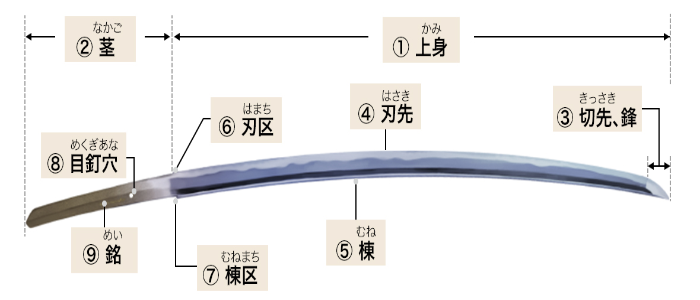
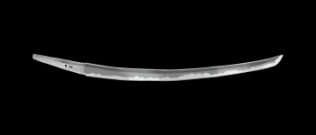
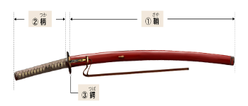

「刀剣」とは、刀身、または剣身を備えた武器の総称のこと。日本では、一般的に片側に刃が付いた刃物を「刀」、両側に刃が付いた刃物を「剣」として区別しています。日本で製造された刀剣は、大きさや形状によって様々な名称が付けられているのが特徴。「太刀」（たち）、「打刀」（うちがたな）、「脇差」（わきざし）、「短刀」（たんとう）、「槍」（やり）、「剣」（つるぎ／けん）、「薙刀」（なぎなた）、「鉾」（ほこ）などがその代表で、これらすべてを指して「刀剣」と呼ぶ。

一番好きな刀剣 「日光一文字」（にっこういちもんじ）
「日光一文字」という号の由来は、「日光権現社」（にっこうごんげんしゃ：現在の栃木県日光市）に奉納されていた刀剣を、「後北条家」の創始者「北条早雲」（ほうじょうそううん）が譲り受けたという伝承にあります。
本太刀は無銘ではありますが、華麗な「重花丁子乱」（じゅうかちょうじみだれ）の刃文から、鎌倉時代に備前国（現在の岡山県東南部）で活動した「福岡一文字派」の刀工によって制作されたと鑑せられます。

刀剣は、刀身だけでは持ち運ぶことができません。そこで使用されるのが「拵」（こしらえ）と呼ばれる外装です。
拵の中でも自分は刀身と鍔（つば）の接する部分にはめる筒状の金具である「鎺」。
刀剣の刀身と持ち手部分である柄（つか）の間にある「鍔」（つば）が好きです。
中でも「天下五剣」の1振「大典太光世」の鎺が表にハト、裏に梅が彫ってあり好きでした。